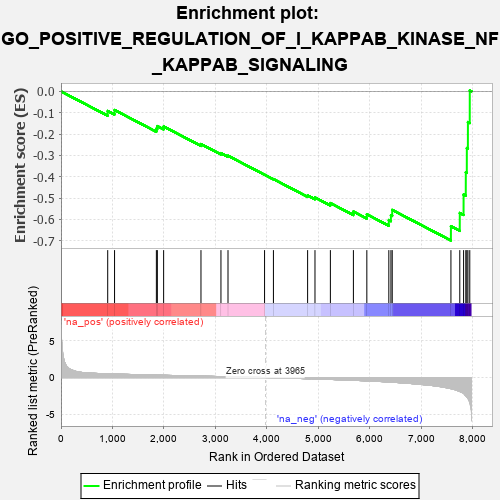
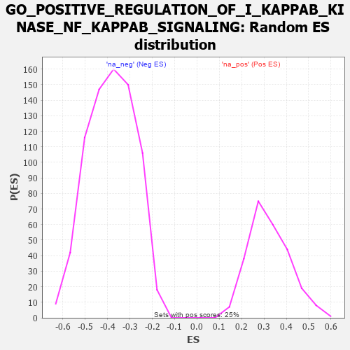

| | | Dataset | 7d |
| Phenotype | NoPhenotypeAvailable |
| Upregulated in class | na_neg |
| GeneSet | GO_POSITIVE_REGULATION_OF_I_KAPPAB_KINASE_NF_KAPPAB_SIGNALING |
| Enrichment Score (ES) | -0.6992782 |
| Normalized Enrichment Score (NES) | -1.8218783 |
| Nominal p-value | 0.0 |
| FDR q-value | 0.011733968 |
| FWER p-Value | 0.313 |
Table: GSEA Results Summary

Fig 1: Enrichment plot: GO_POSITIVE_REGULATION_OF_I_KAPPAB_KINASE_NF_KAPPAB_SIGNALING
Profile of the Running ES Score & Positions of GeneSet Members on the Rank Ordered List
| PROBE | GENE SYMBOL | GENE_TITLE | RANK IN GENE LIST | RANK METRIC SCORE | RUNNING ES | CORE ENRICHMENT | | 1 | WLS | | | 907 | 0.505 | -0.0918 | No |
| 2 | AKT1 | | | 1040 | 0.476 | -0.0874 | No |
| 3 | TRIM5 | | | 1852 | 0.327 | -0.1749 | No |
| 4 | NUP62 | | | 1871 | 0.324 | -0.1629 | No |
| 5 | ROR1 | | | 1993 | 0.306 | -0.1646 | No |
| 6 | DDX1 | | | 2718 | 0.196 | -0.2470 | No |
| 7 | TMED4 | | | 3106 | 0.136 | -0.2897 | No |
| 8 | TFG | | | 3243 | 0.114 | -0.3017 | No |
| 9 | PPM1A | | | 3953 | 0.002 | -0.3909 | No |
| 10 | ABL1 | | | 4125 | -0.027 | -0.4112 | No |
| 11 | PIM2 | | | 4789 | -0.155 | -0.4878 | No |
| 12 | CASP1 | | | 4932 | -0.185 | -0.4975 | No |
| 13 | DDX21 | | | 5231 | -0.252 | -0.5238 | No |
| 14 | CASP8 | | | 5678 | -0.369 | -0.5636 | No |
| 15 | VAPA | | | 5939 | -0.449 | -0.5764 | No |
| 16 | BIRC3 | | | 6366 | -0.603 | -0.6034 | No |
| 17 | UBE2N | | | 6407 | -0.621 | -0.5810 | No |
| 18 | MALT1 | | | 6432 | -0.634 | -0.5560 | No |
| 19 | LITAF | | | 7572 | -1.511 | -0.6324 | Yes |
| 20 | RNF31 | | | 7744 | -1.895 | -0.5701 | Yes |
| 21 | TRAF6 | | | 7818 | -2.157 | -0.4839 | Yes |
| 22 | TRAF2 | | | 7861 | -2.481 | -0.3795 | Yes |
| 23 | FYN | | | 7881 | -2.622 | -0.2659 | Yes |
| 24 | MIB2 | | | 7902 | -2.813 | -0.1440 | Yes |
| 25 | TRAF5 | | | 7938 | -3.448 | 0.0042 | Yes |
Table: GSEA details [plain text format]

Fig 2: GO_POSITIVE_REGULATION_OF_I_KAPPAB_KINASE_NF_KAPPAB_SIGNALING: Random ES distribution
Gene set null distribution of ES for GO_POSITIVE_REGULATION_OF_I_KAPPAB_KINASE_NF_KAPPAB_SIGNALING